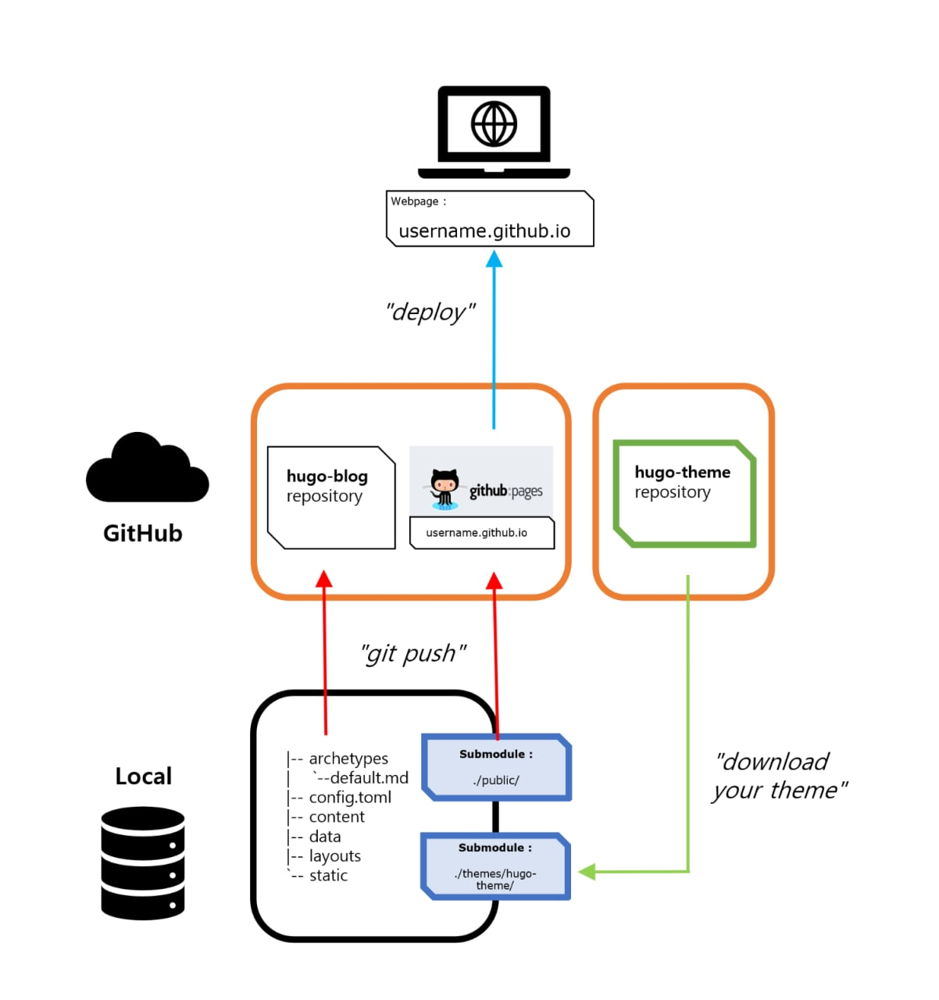
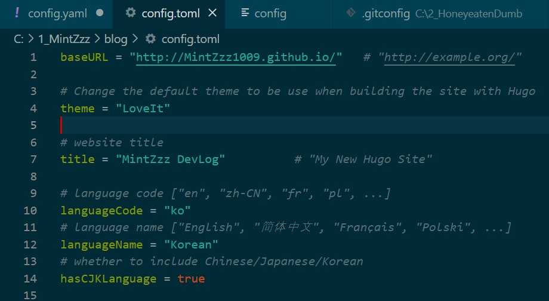
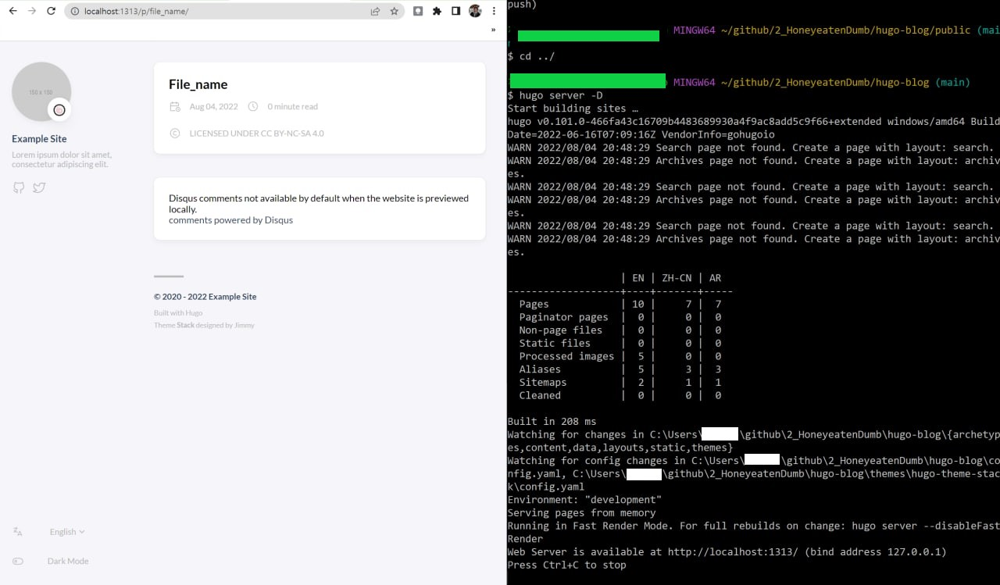
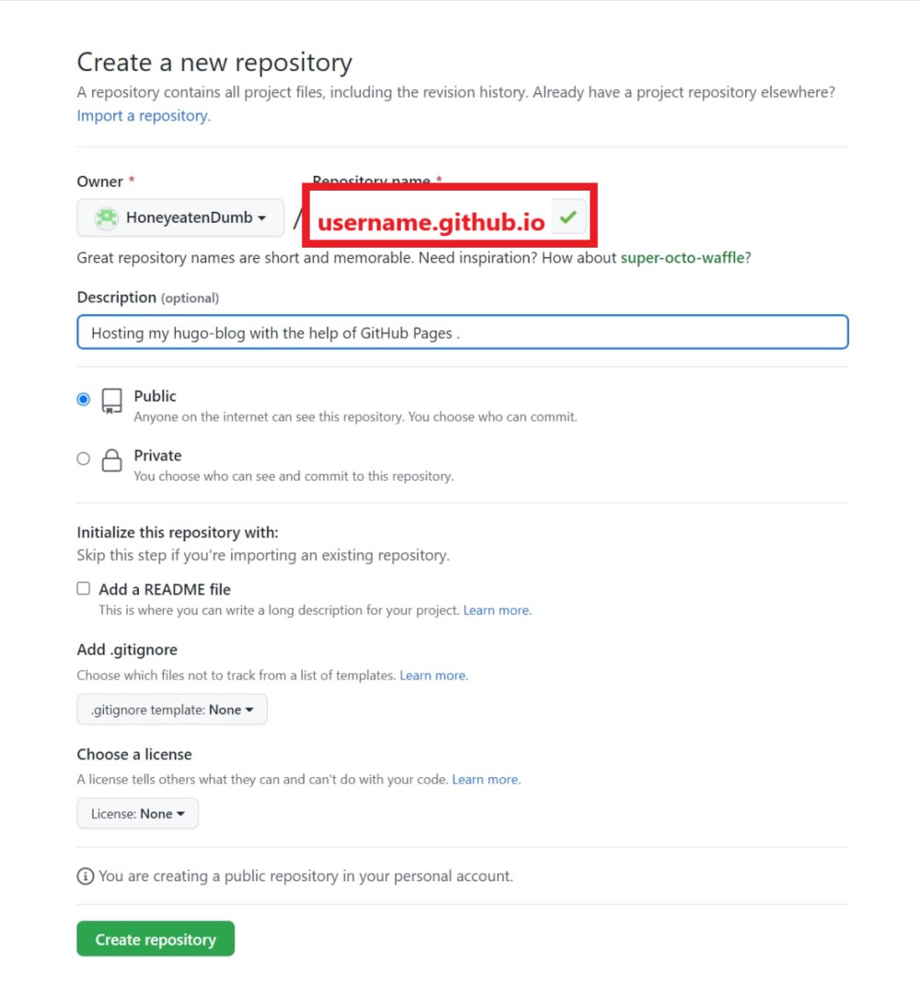
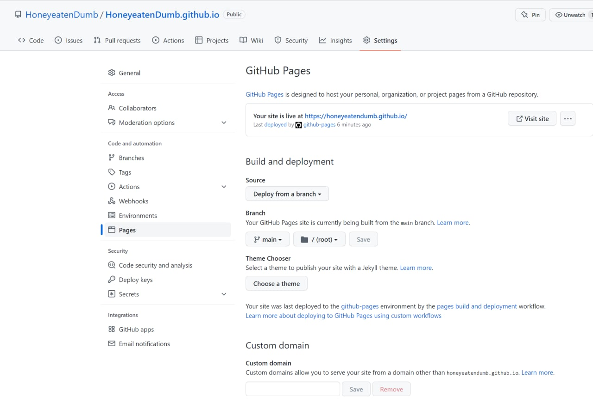

[Hugo-blog] Hugo, GitHub Pages로 블로그 만들기

기술 블로그를 통해 내가 배우는 내용 등을 한번 더 정리하는 것이 꼭 필요하다는 사실을 알았다. 여러가지 블로그들이 있지만 기술 블로그로 활용하기에 가장 효율적이고 적절한 것은 무엇일까 구글링을 하면서 다른 분들의 블로그도 많이 참조하였다. 그렇게 최종적으로 결정한 방법은 Hugo라는 Static Site generator를 활용하는 것이었다. 이번 포스팅에서는 내가 여러 시행착오와 구글링을 통해 나름대로 이해하게 된 Hugo를 활용한 정적 사이트(static site) 개발과 배포 방법에 대한 내용을 정리해보고자 한다.
아래 내용들은 보다 명확한 정리를 위해서 새로운 깃헙계정으로 다른 Hugo-blog를 만들면서 작성했다.
Hugo, GitHub Pages로 블로그 만들기
- GitHub Repository를 활용한 소스 관리
- submodule 활용
- .gitognore 활용
- GitHub Pages와 Netlify를 통한 배포
- 쉘 스크립트와 GitHub Actions를 이용한 자동화
위의 목록들은 Hugo로 블로그를 만드는 방법을 구글링 했을 때 자주 보이는 방법들을 기능에 따라 대략적으로 정리한 것이다.
나는 username.github.io 라는 도메인이 멋있어 보여서 GitHub Pages를 사용하기로 결정했고, 처음 빌드와 배포를 하는 것이다보니 직접 그 과정을 보고 싶어서 바로 자동화를 시켜주는 GitHub Actions는 나중에 배워보기로 하고 bash에서 커맨드를 하나하나 먼저 입력해본 후 쉘 스크립트 파일을 활용해서 자동화해보기로 했다.
나머지 방법들이 내가 선택한 방법에 비해 안좋은 방법은 아니다. Netlify를 이용한 배포는 아주 편리하고 효율적이었으며 특히 평소에 배워보고 싶다고 생각한 GitHub Actions를 사용하는 방법은 나의 호기심을 자극했다. 그냥 하나씩 다 해볼까 라는 생각이 순간 뇌리를 스쳤지만 다행히 그 동안의 많은 삽질을 통해 생겨난 나의 직관이 그러다가는 올 해 취업은 못할거라고 말해줘서 중간에 단호하게 그만두었다. 이미 하나의 방법만을 이해하고 블로그를 구축하는 데에도 오랜 시간이 걸렸기에, 아쉽지만 담가놓은 발을 빼면서 나머지는 정해놓은 공부 목표를 끝낸 후에 조금씩 공부해보기로 하였다.
HUGO - 정적 사이트 생성기 (Static Site Generators)
정적 사이트 생성기(static site generator)와 Hugo에 대해서는 이미 여러 사이트에서 설명하고 있으니 이 글에서는 참조로 대신하겠다.
- The Benefits of Static Site Generators - HUGO 공식사이트
- 오픈소스 블로그 기술의 새 바람! 정적 페이지란? - LG CNS
- 정적사이트 생성기란 - 유기체의 다락방
기본 개념
Hugo를 이용해서 정적 사이트를 생성하는 과정을 간단화 하면 다음과 같다.
좀 더 과정을 구체화하여 도식화해봤다.
Hugo 설치
블로그 생성을 위해 Hugo 설치를 한다면, 블로그에 적용할 테마를 먼저 선정하는 것이 낫다. 아주 정적인 페이지를 구현하고자 한다면 일반 버젼을 설치해도 상관없지만 어느정도 동적인 디자인을 원한다면 extended 버젼을 설치해야 한다. 자세한 사항은 해당 테마 GitHub저장소의 README.md나 Demo사이트, Document 등에 잘 설명되어 있을 것이다. 각 테마에서 설명해주는 것을 꼼꼼히 읽기를 권한다.(Hugo의 Extended 버젼은 Sass와 SCSS를 지원한다.)
들어가기 전 알아야 할 Hugo와 Git의 기능들
$ hugo new site [hugo-blog] 명령어를 실행하면 Hugo는 “hugo-blog"라는 이름으로 Directory Structure를 구성한다.
|
|
루트 디렉터리를 /hugo-blog/(= ./)로 놓겠다. 기본적인 블로그 생성을 위해서 ./public/, ./themes/의 역할을 아는 것이 중요하다.
themes 디렉터리
선호하는 테마를 선택하여 hugo-blog에 적용하려면 ./themes/your-theme/ 하위에 $ git clone이나 $ git submodule add나 zip 파일을 다운로드 해야 한다.
테마 파일의 디렉터리 구조는 우리가 생성한 hugo-blog의 구조와 거의 유사하다. Hugo에서는 theme overriding을 지원하기 때문에 우리는 ./themes/ 의 코드를 수정하지 않아도 된다.
오히려 보통 submodule로 테마를 설치하기 때문에 코드를 수정하면 $ git push를 할 때 충돌이 나게 된다.
기회가 된다면 Hugo의 theme overriding에 대해서는 추후에 테마를 커스터마이징하는 포스팅에서 더 자세하게 다뤄보겠다.
public 디렉터리
Hugo를 통해 컨텐츠 즉 게시물을 markdown으로 작성하려고 한다면 hugo new [post/file_name.md]를 실행한다. 그러면 ./content/하위에 다음과 같이 파일이 생성된다.
(테마에 따라 post/file_name.md 가 아니라 posts/file_name.md 를 해야하는 경우도 있으니 주의해야한다.)
|
|
배포를 위해서 $ hugo -t [테마-이름] 명령어로 빌드를 하였을 때, 빌드된 파일들은 ./public/하위에 다음과 같이 생성된다.
|
|
Submodule과 Push
./public/은 Hugo를 통해 빌드된 파일들로 구성되어 있다. 따라서 배포용 remote repository(GitHub Pages 기능을 담당하는)에 push되어야 한다.
Git의 submodule 기능을 활용해서 ./public/을 상위 저장소(/hugo-blog/)의 main module과 분리하여 GitHub에 push한다.
로컬에서 ./public/은 /hugo-blog/하위에 있지만 submodule로 생성되었기 때문에 /hugo-blog/가 푸시되는 remote repository의 ./public/은 커밋으로 취급되어 표시된다. 그리고 ./public/을 클릭하면 디렉터리가 Push된 저장소인 GitHub Pages를 통해 배포되는 username.github.io 저장소로 연결된다.
-
submodule을 이용한 방법의 장점 원본 소스와 배포용 소스를 따로 저장소를 나눠서 관리할 수 있으며, 그리고 타인이 리모트 저장소를 clone할 때, 원본 소스 저장소를 clone하면 submodule로 생성된 배포용 소스 저장소까지 한번에 clone할 수 있다는 점이 편리하다.
-
submodule 사용시 주의할 점 이 방법으로 blog를 생성할 때 주의할 점은 submodule을 추가하기 전에 상위 local 저장소를 먼저 초기화해야하고, 나중에 리모트 저장소에 Push를 할 때에는 submodule로 생성된 저장소를 먼저 Push한 후에 상위 저장소를 Push 해야 한다는 것이다.
Hugo에서 ./public/, ./themes/ 디렉터리의 기능이 어느정도 이해가 된다면 두 개의 디렉터리에 Submodule을 추가하는 이유도 이해할 수 있을 것이다.
$hugo -t 테마-이름으로 빌드를 실행하고 ./public/으로 이동하여 GitHub Pages 전용 리모트 저장소에 푸시하면 자동으로 배포가 될 것이다.Process
blog 생성 과정을 좀 더 자세하게 단계별로 정리해본다.
- 1. 프로젝트 생성
- 2. 테마 다운로드
- 3. config.toml(or yaml, json) 수정
- 4. 컨텐츠 생성
- 5. GitHub Pages 저장소 초기화
- 6. Build
- 7. Git Repository Push
- 8. 쉘 스크립트를 이용한 자동화
1. 프로젝트 생성
$ hugo new site [hugo-blog]를 실행하면 hugo-blog 라는 이름의 프로젝트가 현재 위치에 생성된다. 경로설정을 하고 싶다면hugo-blog대신../user1/hugo-blog등으로 입력하면 된다./hugo-blog/로 이동해서$ git init을 통해 로컬 저장소를 초기화 시킨다. 다음 순서에서 리모트 저장소에 있는 테마를 submodule로 추가하기 위해서는 main module의 역할을 하는 저장소가 반드시 먼저 초기화되어야 한다.
2. 테마 다운로드
테마 고르기를 통해서 취향에 맞는 테마를 고른다. 나는 hugo-theme-stack 이라는 테마를 적용해보겠다. 테마를 다운로드하는 방법은 3가지가 있다.
- Download Zip
별로 추천하지 않는다. git을 활용하는 것에 비해 불편하고 저장공간을 낭비하게 된다. $ git clone
가장 간단한 방법이다../themes/hugo-theme-stack하위에 파일들이 생성된다. 단, 원본 소스를 github를 통해서 관리할 수 없게된다. 왜냐하면 git clone을 사용할 경우, submodule이 아니라 main module로 작동하게 되기 때문이다. 만약 clone을 사용하여서 hugo-blog 하위에.git파일이 생성되면 hugo-blog는 정상적인 커밋을 가질 수 없게 되고 push할 경우 충돌이 나게된다.(이 경우./themes/hugo-theme-stack하위에 생성된.git파일을 제거하면 동작하지만 비효율적인 방법이라고 생각되어 추천하지 않는다.)
만약 원본 소스를 GitHub에 푸시할 생각이 없고./public/디렉터리만 GitHub Pages 저장소(username.github.io)에 푸시하여 배포하려고 한다면 가장 간편한 방법으로 선택할 수 있을 것이다. 다만 주기적으로 테마 저장소가 업데이트 되어서 나도 테마의 소스 코드를 자주 업데이트하려는 사람에게는 이 방법을 권하지 않는다.$ git submodule add [저장소-URL] [themes/테마-이름]
가장 일반적인 방법이다. 대부분의 사람들이 사용한다./hugo-blog/를 푸시할 일반적인 리모트 저장소와./public/을 푸시할 GitHub Pages 저장소를 따로 운영하게 된다. 블로그 커스터마이징 등을 목적으로 원본 소스와 배포용 소스를 모두 관리하려고 한다면 이 방법이 편리할 것이다. 또한 리모트 저장소에서도 저장공간을 차지하지 않고 커밋으로 인식하기 때문에 효율적이다. 테마를 최신으로 유지하는 것도 간편한 일이 된다.
3. config.toml(or yaml, json) 수정
Hugo의 테마 디렉터리에는 보통 /exampleSite/가 존재한다. 디렉터리를 살펴보면 예시로 적용된 게시물 컨텐츠들과 블로그의 Configuration File이 포함되어 있다. 이 파일을 이용하면 쉽고 간편하게 테마에 맞는 설정을 적용할 수 있다. Hugo는 기본적으로 config.toml, config.yaml, config.json을 Configuration File로 사용한다. 기본적으로 config.toml이 생성되지만 각 테마마다 사용하는 확장자가 다르므로 제공해주는 파일을 적용하는 것이 편리할 것이다.(./themes/테마-이름/ 에도 config.toml 파일이 존재하지만 default 값으로 생성되어 값이 없는 것이 많기 때문에 일일히 찾아서 입력하는 것보다 exampleSite의 config.toml을 사용하는 것을 추천한다.)
./config.toml삭제./themes/테마-이름/exampleSite/config.toml복사하여./에 붙여넣기(잘라내기나 어떤 이유로든 테마 디렉터리에 변경사항이 생기지 않도록 해야한다.)- 붙여넣은
config.toml내용 수정. 아래는 예시이다.config.toml config.yaml  
4. 컨텐츠 생성
Hugo에서 블로그 포스팅을 위해서 file_name.md라는 파일을 생성하기 위해서는 다음 명령어가 필요하다. $ hugo new [post/file_name.md]. 실행하면 ./content/post/file_name.md 경로로 컨텐츠가 생성된다. 생성된 파일을 VScode를 사용하여 파일을 열면
|
|
를 확인할 수 있다. 맨 위의 ---과 그 다음 나타나는 ---까지는 front-matter의 영역이다. Hugo는 markdown 문서에 front-matter 값들을 설정할 수 있게 해준다. 컨텐츠의 내용은 그 아래부터 적용된다.
- date의 시간값은
$ hugo new post/file_name.md를 실행할 때 자동으로 입력된다. - draft값이 true인 포스팅은 별도의 옵션이 없으면 빌드나 렌더링에 포함되지 되지 않는다. 공백이나 false로 값을 변경해주자.
- 테스트를 위해 내용 부분에
Hello, Hugo-blog :)등을 입력한 후 저장해보자. $ hugo server를 실행하면 파일이 렌더링된 모습을 로컬접속으로 실시간으로 확인할 수 있다. markdown 파일을 수정하면서 실시간으로 확인해보자. Hugo의 빠른 속도가 가지는 장점이 가장 부각되는 기능이 아닐까 생각된다.(draft 값이 true인 문서의 렌더링된 모습도 보고 싶다면$hugo server -D를 실행하면 된다.) 
5. GitHub Pages 저장소 초기화
이제는 정적 사이트를 구성하기 위해서 빌드과정이 필요하다. Hugo는 ./content/에 있는 자료들을 빌드하여 ./public/에 보내게 된다. 그러나 지금 바로 빌드과정으로 들어가면 ./public/은 /hugo-blog/ 깃 저장소의 .git에 의해 커밋으로 취급되어 내부의 빌드된 파일들을 GitHub Pages 리모트 저장소에 푸시할 수 없게된다. 따라서 기존에 존재하는 ./public을 삭제한 후, GitHub Pages 리모트 저장소를 새로 생성한 로컬의 public 디렉터리에 submodule로 추가해야 한다.
-
먼저 GitHub에 로그인하여 GitHub Pages 전용 repository를 새로 생성한다. 주의할 것은 repository name을 설정할 때 반드시
username.github.io형식을 취해야 한다는 것이다.(Pro 계정이 아니라면 Repository를 Public으로 설정해야 한다.)
Create repository를 클릭한 후, README.md 파일 등을 생성하여 main branch가 생성되도록 한다.
 -
저장소가 생성되면 상단의 Repository 탭에서 Settings를 클릭하고, 좌측 메뉴에서 Pages를 클릭한다. 블로그가 main branch에서 deploy 될 수 있도록 다음 사진과 같이 설정한다.

Custom domain을 따로 구입해서 사용하는 것이 아니라면 Source와 Branch 항목만 설정하면 된다. 우리는 Jekyll이 아니라 Hugo를 사용했기 때문에 테마 항목도 넘어간다. -
Personal access tokens가 없다면 생성한다.
-
기존에 생성된
./public/을 삭제한다. -
$ git submodule add -b main [리모트 저장소 URL] public을 실행한다. GitHub에서 저장소를 생성한 후, 아직 branch가 생성되기 전이기 때문에-b main옵션으로 main 브랜치까지 자동으로 생성되게 한 것이다. 맨 뒤의 public은 submodule이 추가되는 경로를 설정한 것이다. 현재 public 디렉터리가 존재하지 않으므로 새로 생성되면서 리모트 저장소와 연결된 git의 submodule이 추가된다. -
$ git remote -v를 hugo-blog와 public에서 실행해보면 각 로컬 저장소에 연동된 리모트 저장소의 URL이 다르게 나오는 것을 볼 수 있다. 이를 통해 submodule이 잘 설치된 것을 확인할 수 있다.
6. Build
- cd 명령어로
/hugo-blog/로 이동한 후,hugo -t 테마-이름을 실행한다. 내가 선택한 테마 파일을 적용해서 빌드하는 명령어다. ./public/디렉터리를 확인해서 빌드가 잘 되었는지 확인해보자.
7. Git Repository Push
이제 로컬에서의 작업은 끝났다. 빌드된 ./public/ 내부의 파일들은 username.github.io 저장소에 push 하면 자동으로 배포 작업을 해준다.
/hugo-blog/의 원본 소스들은 hugo-blog 저장소에 push 해서 소스 관리를 해준다.
submodule인 ./public/을 먼저 push 해야 충돌 오류 메시지를 확인하는 일이 없을 것이다.
./public/으로 이동하여$ git status,$ git add .,$ git commit -m "메시지",$ git push origin main순서로 명령어를 실행한다. 별 문제가 없다면 30초 정도 뒤에 username.github.io에 접속하여 배포된 모습을 확인할 수 있을 것이다./hugo-blog/로 이동하여 같은 순서로 명령어를 실행하여 리모트 저장소에 코드를 push 한다.
8. 쉘 스크립트를 이용한 자동화
포스팅을 할 때마다 위의 과정을 손으로 하나씩 타이핑해서 처리하기에는 여러가지 불편한 점이 많다. 다행히 쉘 스크립트를 활용해서 빌드 및 배포 과정을 자동화하여 해결할 수 있다.
(GitHub Action을 사용하는 방식도 존재한다. Click to go)
아래의 코드를 deploy.sh로 저장하여 /hugo-blog/에 위치시키고 /hugo-blog/로 경로이동하여 $ ./deploy.sh를 실행해보자.
|
|
자동화 코드는 고운소리님의 블로그를 참조하여 수정했다.
마치며
비전공자로 학원이나 부트캠프 등을 다니지 않고 독학으로 개발 공부를 하고 있는 입장에서 가장 아쉬움을 느끼는 것은 소통환경의 부재였다. 물론 온라인이 아니라 오프라인 환경을 말하는 것이다. 학원이나 부트캠프에서는 프로젝트를 개발하는 과정 중에 발생하는 수많은 종류의 어려움과 예상할 수 없이 터져나오는 에러 메시지의 해결을 위해서 기술적으로나 정신적으로나 자문을 요청할 선배들이 근처에 있지만, 주변에 딱히 지인도 없이 혼자 공부하는 나에게 있어서는 그 모든 문제들의 해결은 오직 구글링과 삽질을 통해서 만이 가능했던 것 같다. 그러다보니 조금이나마 쌓인 지식들을 그냥 나 혼자 알고 넘어갈 생각을 하니 힘겹게 구글링을 하고 삽질을 하던 시간들이 순식간에 날아가는 것 같아 너무 아까웠다. 게다가 한창 삽질하고 있을 나와 같은 사람들을 떠오르면서 조금이나마 도움이 될 수 있다면 좋겠다는 생각이 들었다. 나 또한 구글링을 통해 잘 맞는 솔루션을 발견할 때면 문제 해결을 통해 차오르는 기쁨과 소스 기여자에 대한 고마움이 내 마음 속에 매번 쌓여나가고 있다는 것을 알고 있었기에 앞으로 내가 이 블로그에 게시하는 글들이 그와 같은 역할을 할 수 있기를 바란다. 앞으로 블로그를 운영해가면서 커스터마이징을 하는 과정들도 좀 더 정리해볼 계획이다.